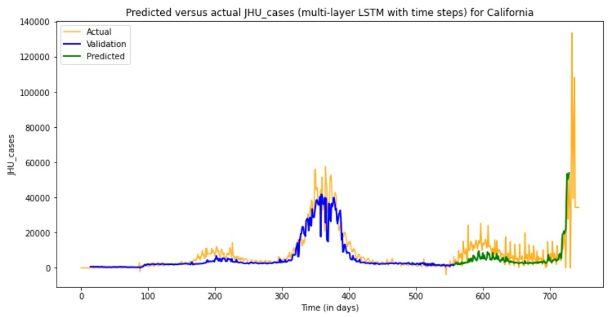
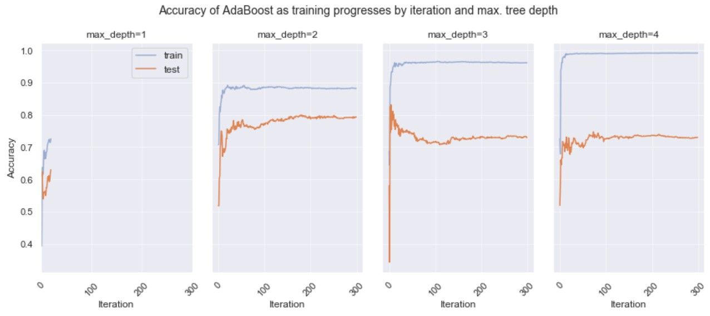

Jackie Garcia-Yi
Data Scientist and AI | Sustainability Expert | Bio-Acoustic Monitoring
About Me
Dynamic data scientist with nearly 20 years of international experience, specialized in environment, rural development, and climate change. My career spans the United Nations (UNEP, UNODC) and German academia, where I focus on climate change mitigation, impact assessment, and the application of advanced data analytics to sustainable development.
I have overseen multi-million-dollar initiatives, led cross-functional teams, and delivered data-driven insights that inform global policy and programming.
I develop predictive models, design AI-driven tools, and build intelligent systems—from scalable reporting pipelines to LLM-powered agents—that extract meaning from complex datasets. My work enables organizations to automate analysis, enhance decision-making, and apply cutting-edge data science to real-world sustainability challenges.
Data Science Projects
Time Series Prediction of Outbreak of Infectious Diseases
This project explores the policy potential of predictive modeling for infectious disease outbreaks using time series methods, including SMA, ARMA, RNN, and LSTM models...
Impact of COVID on Education
This project examines the impact of COVID-19 on global primary education completion rates using regression models such as Linear, Lasso, k-NN, and Adaboost...
Reports
UN World Drug Report 2020

The UN World Drug Report spotlights "Alternative Development" as a long-term strategy to address illicit crop cultivation...
Strategic Maps for Decision-Making

This research models opium poppy cultivation likelihood across Afghanistan using spatial econometrics...
Remote Sensing for Poppy Detection

This report evaluates the use of Landsat 8 imagery for identifying opium poppy crops in Afghanistan...
NLP for UN Biodiversity Speeches

Applies Structural Topic Modeling and NLP to over 5,000 pages of UN biodiversity policy speeches...
More Information
Contact Information
Email: jackiegarciayi@gmail.com
Phone/WhatsApp: +43-6701889288